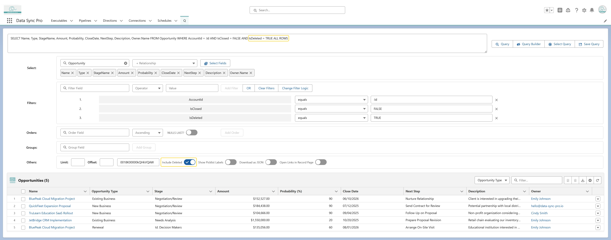
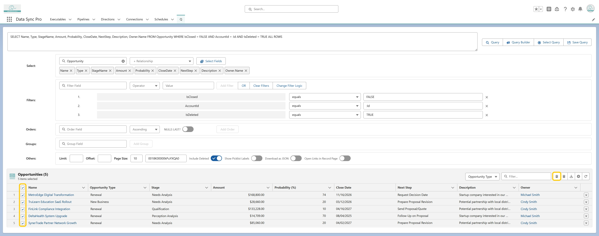

<article>
    <p>
      Yes. Simply query deleted records by adding <code>IsDeleted = TRUE</code> 
      to your filters and including <code>ALL ROWS</code> in the query. 
        

      Then, select the records and apply <strong>Mass Undelete</strong> to restore 
      them in a single step.
        
    </p>

  </article>
  